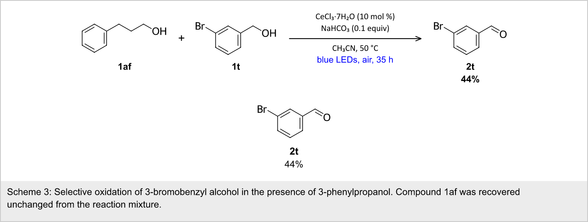

First run · Chem Canvas
Scores and review notes (Chinese)
- 分子图
- 3/3
- 反应条件
- 7/7
两个起始物、产物、44% 收率及 1af 未反应均识别正确。原图的醛用展开的 C=O 表示，盲测也采用了这种画法。盲图重复画了一次产物；同数据复绘已去重。条件行的蓝色仍延伸到了 air 和 35 h。
The drawing identifies product 2t (44%) and the unchanged alcohol 1af. Both the paper and the blind drawing show the aldehyde with an explicit carbonyl. A later render removes a duplicated product.

两个起始物、产物、44% 收率及 1af 未反应均识别正确。原图的醛用展开的 C=O 表示，盲测也采用了这种画法。盲图重复画了一次产物；同数据复绘已去重。条件行的蓝色仍延伸到了 air 和 35 h。
沿用盲测保存的三个分子，切换至仅绘反应式，移除重复产物。